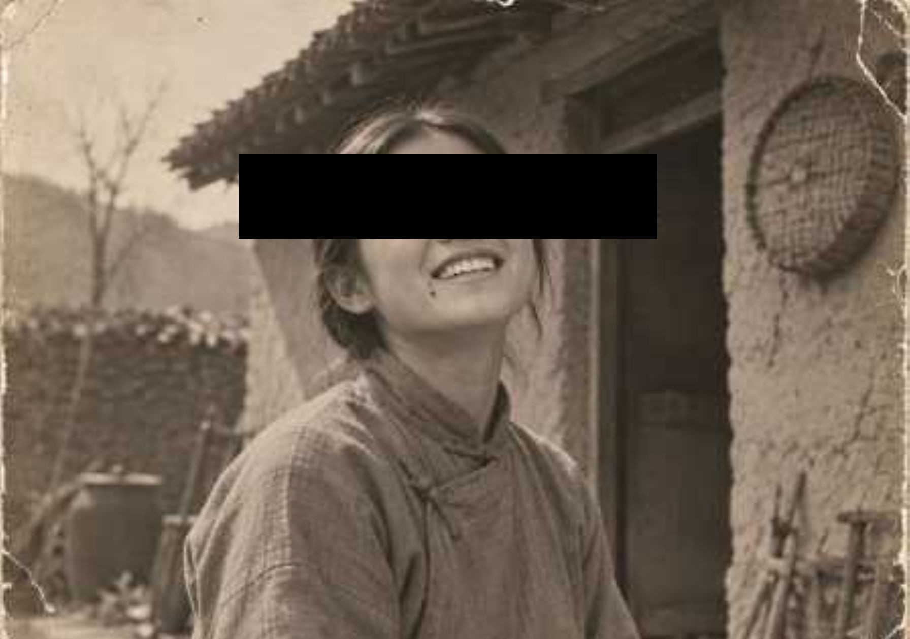

https://cazonwer.github.io/fairy/jiyi/
柳小小，容貌秀美，右侧嘴角生有一颗标志性的痣，天资聪慧，性情灵秀，十分讨人喜爱。虽有不少人倾心追求，她却始终不为所动。
她偶然拾得《抱朴子・论仙》一书，熟读至能够倒背如流，平日常引书中古文谈吐，借以自持。
柳小小幼年丧父，后跟随母亲改嫁，母亲于改嫁后不久因病去世。
柳小小于 1934 年失踪，失踪时仅留下一张字条，上书："目察百步，不能了了，而欲以所见为有，所不见为无，则天下之所无者，亦必多矣。"
